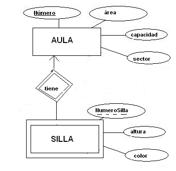

Como traducir una Entidad Débil?
La entidad débil siempre reflejará su dependencia con otra entidad (entidad fuerte) que le permita construir su propia clave. Como recordaremos, la entidad débil debe valerse de la clave de la entidad fuerte y, haciendo la analogía con los conceptos del modelo relacional, simplemente lo que está pasando es que esta entidad débil de alguna manera debería tener una especie de clave foránea que referencie la clave primaria de su entidad fuerte.
Una entidad débil se traduce como una tabla que tiene los mismos atributos de la entidad débil junto con el atributo clave de su entidad fuerte. La clave primaria de dicha tabla será compuesta por esta clave de la entidad fuerte y el discriminante.
Recuerde que el discriminante de una entidad débil corresponde a aquel o aquellos atributos de la entidad débil que, junto con la clave de la entidad fuerte, forman la clave de la entidad. Y recordar que este discriminante en el modelo Entidad / Relación se dibuja con un subrayado punteado.
Ejemplo:
Para el desarrollo del ejemplo, mirar la siguiente gráfica:

Fuente Propia.
La entidad AULA, por ser una entidad fuerte, es traducida con la regla anterior:
| AULA |
|
Número PK Area Capacidad Sector |
Pero, en cambio, la entidad SILLA, por ser débil se traduce de la siguiente manera:
| SILLA |
|
Numero_Aula Numero_Silla Altura Color |
| PK: Numero_Aula, Numero Silla |
| FK: Numero_Aula referencia a Aula(Numero) |
Como se puede apreciar en la traducción anterior, la clave de la tabla resultante de la traducción de una entidad débil siempre será compuesta por 2 o más atributos. Y además, la dependencia de la entidad débil con su fuerte se reflejará a través de una clave foránea que se genera en la tabla “débil” y que apunta a la clave primaria de la tabla “fuerte”.
Nota: Como se puede apreciar en la gráfica del ejemplo, a la relación entre una entidad fuerte con su respectiva entidad débil se le grafica con doble rombo, a diferencia de una relación entre dos entidades normales que se grafica con simple rombo.
Video: